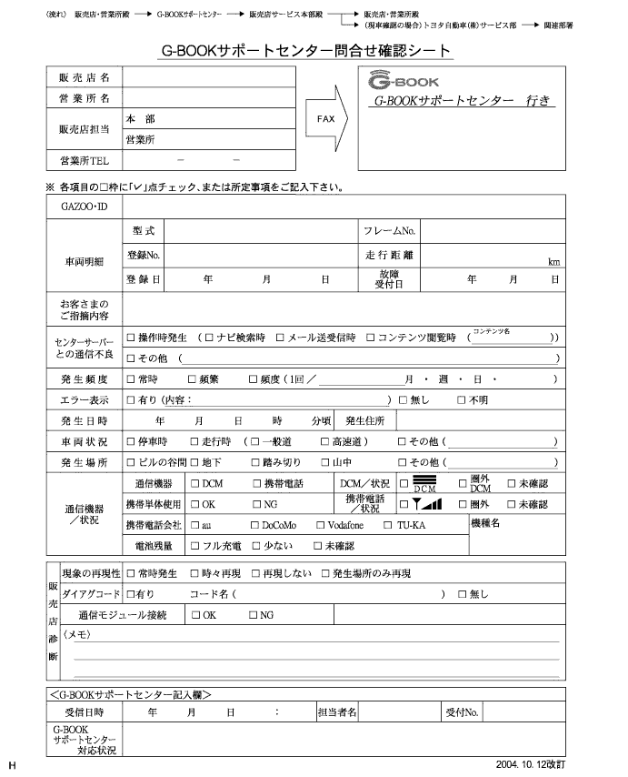

ダイアグノーシスコード確認(サービス検査)(要領は 参照)
参照)
G-BOOKサポートセンター問合せ確認シート記入

各項目を記入し、G-BOOKサポートセンターへFAXを送付する。
項目名 記入要領 備考 販売店名 変更依頼者の販売店名を記入 依頼者情報 営業所名 変更依頼者の営業所名を記入 依頼者情報 販売店担当 変更依頼者名を記入 依頼者情報 営業所 Tel 変更依頼者の営業所の電話番号を記入 依頼者情報 GAZOO·ID お客様のGAZOO·IDを記入 依頼対象車両情報 車両明細-型式 該当車両の型式を記入 依頼対象車両情報 車両明細-フレームNo. 該当車両のフレーム番号を記入 依頼対象車両情報 車両明細-登録No. 該当車両の登録ナンバーを記入 依頼対象車両情報 車両明細-走行距離 該当車両の走行距離を記入 依頼対象車両情報 車両明細-登録日 該当車両の登録日を記入 依頼対象車両情報 車両明細-故障受け付け日 該当車両の入庫日を記入 依頼対象車両情報 センターサーバーとの通信不良 通信不良発生時にレ点を打つ 販売店からの不具合情報 発生頻度 通信不良の発生頻度を記入する 販売店からの不具合情報 エラー表示 通信不良のエラー表示の有無およびエラー表示内容を記入する 販売店からの不具合情報 発生日時 通信不良の発生日時を記入する 販売店からの不具合情報 発生住所 通信不良の発生住所を記入する 販売店からの不具合情報 車両状況 通信不良発生時の車両状況にレ点を打つ 販売店からの不具合情報 発生場所 通信不良の発生場所にレ点を打つ 販売店からの不具合情報 通信機器/状況-通信機器 使用している装着機器(携帯電話)にレ点を打つ 販売店からの不具合情報 通信機器/状況-携帯単体使用 携帯電話単体で使用可能かどうかにレ点を打つ 販売店からの不具合情報 通信機器/状況-携帯電話/状況 通信不良発生時の携帯電話の圏内·圏外表示にレ点を打つ 販売店からの不具合情報 通信機器/状況-携帯電話会社 携帯電話会社にレ点を打つ 販売店からの不具合情報 通信機器/状況-電池残量 携帯電話の電池残量にレ点を打つ 販売店からの不具合情報 通信機器/状況-機種名 携帯電話の機種名を記入する 販売店からの不具合情報 販売店診断-現象の再現性 現象の再現性にレ点を打つ 販売店からの不具合情報 販売店診断-ダイアグコード ダイアグコード出力の有無およびダイアグコード内容を記入する(要領は 参照)販売店からの不具合情報 - □ 参 考 □
- お客様の保有する携帯電話を使用してデータ通信を行っている場合は、通信状態の確認はできない。